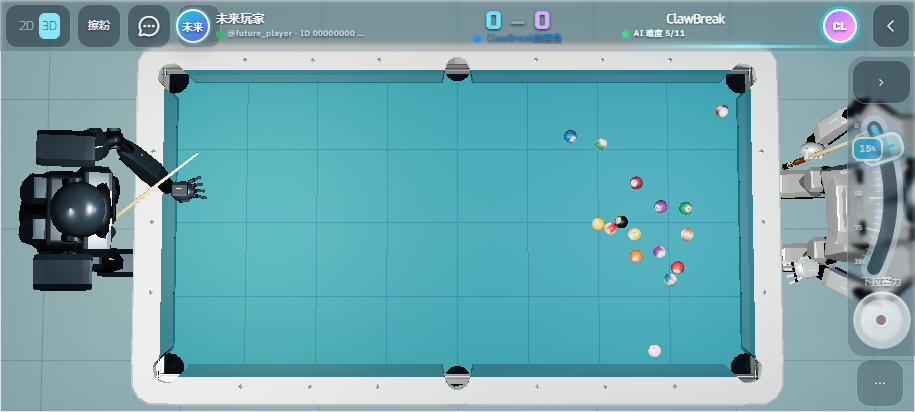
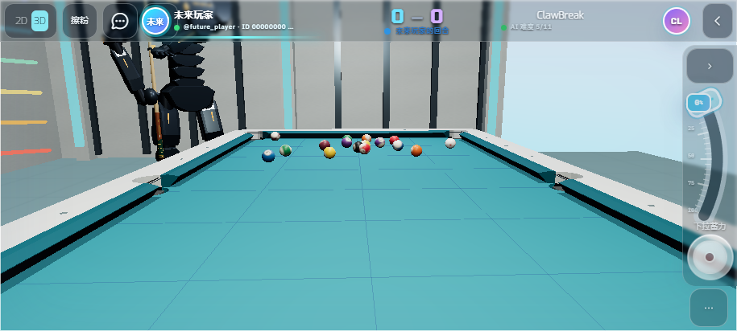
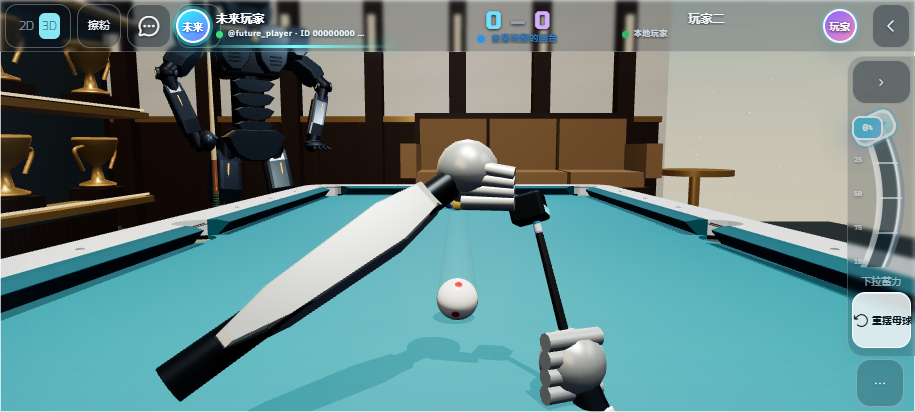

先到位，再出杆
走到击球点 → 俯身稳定 → 瞄准 → 拉杆并前送 → 接触时母球运动 → 停留 1 秒 → 起身
AI、管理员演示和手动击球共用同一个击球准备流程。以下为实际本地 WebGL 截图；手机横屏触控模拟，尚未完成手机真机验收。

对手回合：整桌俯视旁观，相机不会进入对手机器人的身体。走位、俯身及拉杆准备期间球保持静止。

管理员演示：机器人准备完成后才触发实际击球。击球后先停留，再用第一人称起身。

顶部「擦粉」：使用当前所选球杆，手持巧粉擦拭杆头。约 2.4 秒后恢复原视角和击球操作；动画不改变角度、力度、旋转或球位。
验证：838 项单元测试通过；21 项相关浏览器用例覆盖真实 AI、管理员演示、触控擦粉、击球时序、视角、移动端操作与生命周期。
AI 逐帧采样 · 演示逐帧采样 · 线上资源核验 · 发布记录